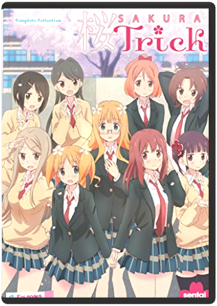
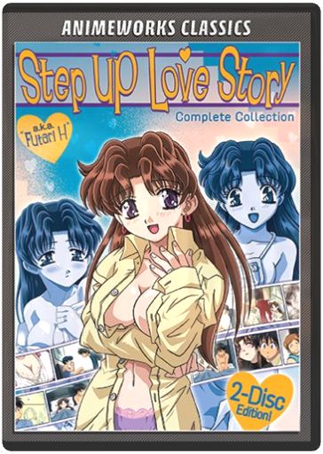
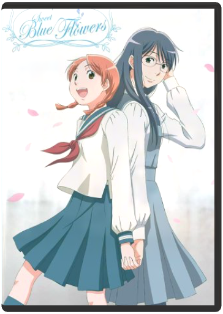
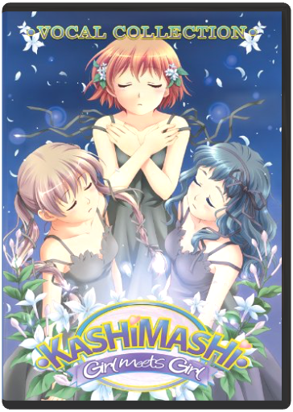

Transamerican Love Story, The Complete First Season  Alec Mapa hosts this groundbreaking and frolicsome elimination dating show. Our transgender bachelorette, Calpernia Addams, finds herself in a modern day fairytale as she's being wooed by eight dashing men. With the help of her trans best friend, Andrea & a parade of challenges and dates, Calpernia whittles down her group of suitors in hope of finding her prince charming. This disc set includes all eight episodes from season 1. Sakura Trick Complete CollectionKen'ichi Ishikura Haruka and Yuu have been best friends forever and they've always sat next to each other in class since… well, since they were just girls in junior high anyway. But on their first day of high school, they're stunned to learn that the new seating plan has them on opposite sides of the classroom! So, since everyone knows that long distance relationships won't work unless the parties involved put extra effort into it, they decide they need to do something extra special to permanently seal their friendship. However, deciding to kiss each other awakens a whole new level of feelings, and it doesn't help that some of their classmates seem to be 'involved" in similar circumstances. So what's a girl to do when her best girl friend suddenly seems more like a girlfriend? It's a life lesson that the school curriculum isn't normally prepared to teach, except maybe in French class, and our two young heroines are about to get a private education you'll never forget! Discover the truth about the birds and the... er… birds, as two young ladies learn to deal with the pros and cons of intramural osculation in SAKURA TRICK! Step Up Love Story - Complete CollectionHiroshi Ishiodori, Yuji Moriyama Makoto and Yura are a newly married couple, happy and deeply in love. There's just one problem: they're both inexperienced in the ways of intimacy, so their expressions of love and passion tend to be a little awkward. Seeking advice wherever they can get it (neighbors, relatives, co-workers, and more), the couple begins to explore all the ins and outs of married life. Sweet Blue Flowers (Aoi Hana) Complete Series (Litebox)Kenichi Kasai ''What if the one I love is a girl...?'' Tears have always come easily to Fumi, but as a child, she could count on her best friend, Akira, to cheer her up. After a decade apart, Fumi and Akira find themselves reunited by chance. But even as the two girls rediscover their friendship, with the start of the new school year, Fumi becomes romantically involved with a tall, charismatic girl named Sugimoto. Fumi soon finds herself playing a balancing act between friendship and love. Kämpfer Complete CollectionYasuhiro Kuroda Natsuru used to dream of being a lady killer. Instead, he got turned into a Kämpfer - a lady who's supposed to fight and kill other girls in mortal combat! That would cause enough problems all on its own, but it turns out that his best childhood friend swings the other way and she has a crush on her new body. Not to mention that his school has separate sections for boys and girls, and now he's enrolled in BOTH of them. And the rumor-mill has it that he's dating herself. Then there are those other pesky Kämpfers who want to "take her out". He's just not sure which ones mean "on a date" and which ones mean "permanently"! And things get even trickier when Natsuru allows himself to be convinced that it's a good idea to move in with three other Kämpfers for their "mutual defense". Getting in touch with your feminine side's a full-contact, no-holds-barred, Amazon action-fest as Natsuru must become a full-fledged wonder woman or die trying in Kämpfer the Complete Collection! Includes the 2-Episode OVA Kämpfer ~ Für die Liebe Kashimashi: Girl Meets Girl - Vocal CollectionNobuaki Nakanishi Includes the long-awaited new English dub! |
 Made with Delicious Library
Made with Delicious Library